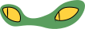

- anim sur position x
- scrollTrigger
- trigger=#terre
- scrub=1, pour que l'animation sois fluide lorsqu'elle s'arrete
Décollage
L'ovni décolle vers l'espace


- anim sur position sur x, y et rotation
- anim drawSVG
- scrollTrigger
- trigger=#terreEspace/li>
- scrub=2, pour que la fusee sois tres fluide lorsque l'utilisateur arrête
Espace
L'ovni arrive dans l'espace


- anim de position x et rotation
- sprite sheet qui s'active quand la class body a la class srolling
- scrollTrigger
- trigger=#espacePlanetes
- scrub=1, pour que quand l'utlisateur s'arrête ça sois fluide
Planetes
L'ovni traverse des planetes


- anim sur position x
- scrollTrigger
- trigger=#espaceBaleines
- scrub=1, pour que ça sois fluide quand l'utilisateur arrête de scroller
Baleines
L'ovni passe a traves des baleines
- anim sur position x et rotation
- scrollTrigger
- trigger=#trouNoir
- stagger pour que ça sois tout décaller
Trou noir
L'ovni c'est faite aspirer à travers un trou noir
.svg)
.svg)
.svg)
.svg)
.svg)
- anim sur rotation
Planetes mortes
L'ovni traverse un cimétiaire de planetes


- anim sur l'opaciter
- scrollTrigger
- trigger=#espaceCuthulu
- toggle action qui restart complete reverse et reset
La fin
L'ovni c'est perdus dans le vide de l'espace
